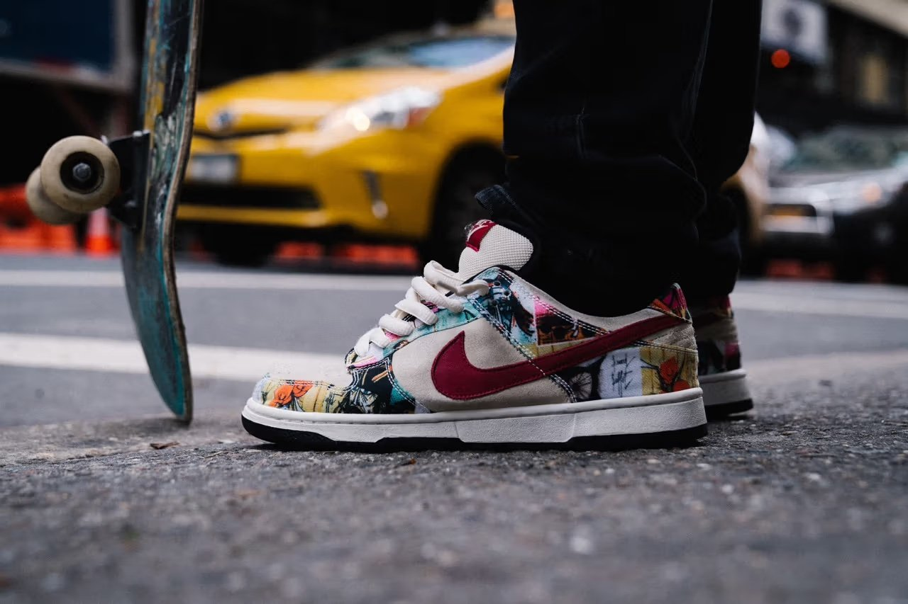
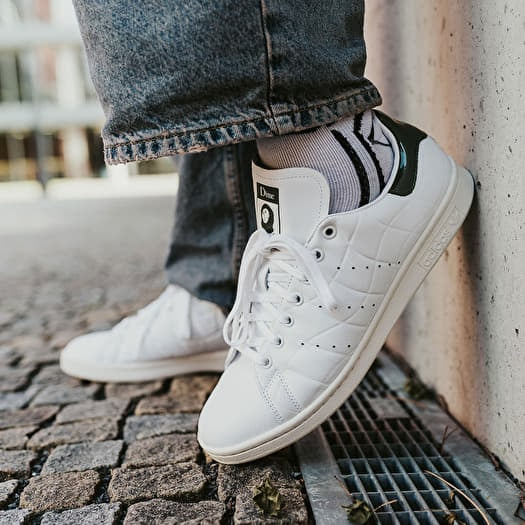
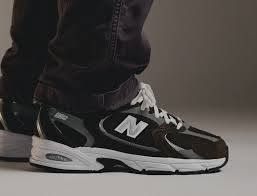

Adidașii sunt mai mult decât simple încălțări sport. Ei reprezintă un stil de viață, o combinație între confort și modă.
Recomandări pentru această lună:
Nike SB Dunk Low


Cele mai populare perechi ale anului 2024:
Mai jos puteți vedea cele mai populare perechi din anul 2025 până în momentul de față